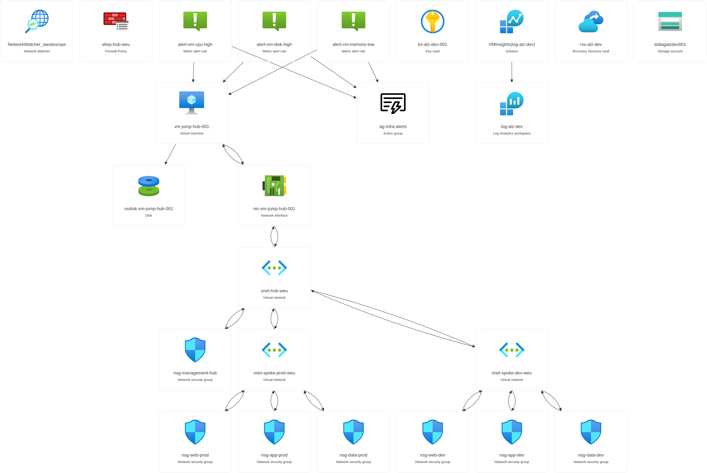

Azure Landing Zone¶
Welcome to the Azure Landing Zone - a complete, production-grade Azure environment built from the ground up as a learning guide.
This project walks us through everything a managed service provider would design, deploy, and operate when setting up Azure infrastructure for an enterprise client. The project targets a secure, well-governed cloud environment in the West Europe (Netherlands) Azure region.
Every file is heavily commented, every design decision is documented, and we are reading the result right now. Whether we are studying for an Azure certification, preparing a portfolio project, or simply want to understand how real-world Azure infrastructure fits together, this guide is for us.
What is a Landing Zone?
Think of a landing zone as the foundation of a house. Before we move furniture in (deploy applications), we need walls, plumbing, and electricity (networking, security, and monitoring). A landing zone gives us that ready-made foundation so every workload we deploy later starts in a secure, well-managed environment.
What's Inside¶
This landing zone covers the full stack of infrastructure services we would find in a real enterprise deployment:
- Hub-spoke network - three Virtual Networks (VNets) that separate shared services
from workloads:
- Hub
10.0.0.0/16- centralized networking and management - Spoke Prod
10.1.0.0/16- production workloads - Spoke Dev
10.2.0.0/16- development workloads
- Hub
- Azure Firewall - all traffic between spokes flows through the hub firewall for centralized inspection and logging
- Azure Bastion - secure, browser-based access to virtual machines without exposing them to the public internet
- Network Security Groups (NSGs) - enforce N-tier security rules so that traffic can only flow in the right direction: web → app → data
- Key Vault with RBAC - secrets, certificates, and keys stored securely using modern role-based access control (not legacy access policies)
- Log Analytics + Azure Monitor alerts - centralized logging and alerting so we know when something goes wrong before our users do
- Recovery Services Vault - automated backup for virtual machines with configurable retention policies
- CI/CD pipeline - a five-stage Azure DevOps pipeline that validates, previews, and deploys infrastructure changes safely
- Azure Policies - governance guardrails that enforce tagging, restrict resource locations, and block public IP addresses
Architecture Diagram¶
The hub-spoke topology is the backbone of this landing zone. The hub VNet sits in the center and hosts shared services (firewall, bastion, VPN gateway). The spokes are isolated networks for different environments. Spokes never talk to each other directly - all inter-spoke traffic passes through the hub firewall.
┌──────────────────────────────────────┐
│ Hub VNet (10.0.0.0/16) │
│ │
│ ┌──────────────┐ ┌────────────────┐ │
│ │ AzureFirewall│ │ AzureBastion │ │
│ │ 10.0.1.0/26 │ │ 10.0.2.0/26 │ │
│ └──────────────┘ └────────────────┘ │
│ ┌──────────────┐ ┌────────────────┐ │
│ │ Management │ │ GatewaySubnet │ │
│ │ 10.0.3.0/24 │ │ 10.0.4.0/27 │ │
│ └──────────────┘ └────────────────┘ │
└──────┬─────────────────────┬─────────┘
│ Peering │ Peering
┌─────────────┴───────┐ ┌──────────┴─────────────┐
│ Spoke: Production │ │ Spoke: Development │
│ (10.1.0.0/16) │ │ (10.2.0.0/16) │
│ │ │ │
│ Web 10.1.1.0/24 │ │ Web 10.2.1.0/24 │
│ App 10.1.2.0/24 │ │ App 10.2.2.0/24 │
│ Data 10.1.3.0/24 │ │ Data 10.2.3.0/24 │
└─────────────────────┘ └────────────────────────┘
Why hub-spoke?
Imagine a wheel. The hub is the center, and each spoke radiates outward. Shared services live in the hub so we only pay for them once. Each spoke is isolated - a problem in the dev spoke cannot directly reach production. This pattern is recommended by Microsoft's Cloud Adoption Framework for most enterprise deployments.
Full Resource Topology¶
The diagram below shows every resource deployed by this landing zone, including resource groups, networking components, compute, security, and monitoring resources.

Quick Start¶
Before we begin, make sure we have:
- Azure CLI installed (
az --versionto check) - An Azure subscription with Owner or Contributor permissions
- PowerShell 7+ (for operational scripts)
Deploy to dev (recommended for learning)¶
The dev deployment is much cheaper because it skips Azure Firewall and Bastion. Start here while we are learning.
# Log in to Azure
az login
# Set a strong password for the jumpbox VM
export JUMPBOX_ADMIN_PASSWORD='YourStrongPassword123!'
# Deploy the dev environment (cheap - no Firewall/Bastion)
az deployment sub create \
--location westeurope \
--template-file infra/main.bicep \
--parameters infra/main.dev.bicepparam \
--parameters jumpboxAdminPassword="$JUMPBOX_ADMIN_PASSWORD"
Deploy to prod (full landing zone)¶
The prod deployment includes all resources - Azure Firewall, Bastion, and the complete monitoring and backup configuration.
# Deploy the prod environment (full - includes Firewall + Bastion)
az deployment sub create \
--location westeurope \
--template-file infra/main.bicep \
--parameters infra/main.prod.bicepparam \
--parameters jumpboxAdminPassword="$JUMPBOX_ADMIN_PASSWORD"
Validate without deploying¶
If we want to check that the Bicep templates compile and are valid without actually creating any resources, run:
# Lint and build locally
bash scripts/bash/validate-bicep.sh
# Validate against the Azure API
az deployment sub validate \
--location westeurope \
--template-file infra/main.bicep \
--parameters infra/main.dev.bicepparam \
--parameters jumpboxAdminPassword='ValidationOnly123!'
Tech Stack¶
| Tool | Purpose |
|---|---|
| Bicep | Infrastructure as Code (Azure-native, compiles to ARM templates) |
| Azure CLI | Deployment and resource management from the command line |
| Azure DevOps | CI/CD pipelines for automated validation and deployment |
| PowerShell 7 | Operational automation (NSG audits, VM scheduling) |
| MkDocs Material | This documentation site |
Why Bicep instead of Terraform?
Bicep is Azure's own Infrastructure as Code language. It has first-class support in VS Code, produces clean and readable templates, and requires no state file. For an Azure-only project like this one, Bicep is a natural fit. See Architecture Decisions for the full reasoning.
Project Structure¶
Here is how the repository is organized. Each folder has a clear responsibility:
.
├── infra/ # All Bicep infrastructure code
│ ├── main.bicep # Orchestrator - wires all modules together
│ ├── main.dev.bicepparam # Parameter values for dev environment
│ ├── main.prod.bicepparam # Parameter values for prod environment
│ └── modules/
│ ├── networking/ # Hub VNet, spoke VNets, NSGs, peering, firewall, bastion
│ ├── compute/ # Jumpbox VM
│ ├── security/ # Key Vault
│ ├── monitoring/ # Log Analytics, diagnostic settings, alerts
│ ├── backup/ # Recovery Services Vault
│ └── storage/ # Boot diagnostics storage account
│
├── pipelines/ # Azure DevOps CI/CD pipeline YAML
│ ├── azure-pipelines.yml # Main 5-stage pipeline
│ ├── templates/ # Reusable stage templates (validate, what-if, deploy)
│ └── scheduled/ # Nightly compliance checks
│
├── scripts/ # Operational automation
│ ├── bash/ # validate-bicep.sh (lint + build)
│ └── powershell/ # NSG audit, VM scheduling
│
├── policies/ # Azure Policy definitions (JSON)
│
├── docs/ # Documentation (this MkDocs site)
│
├── DECISIONS.md # Architecture Decision Records
├── README.md # Project overview
└── CLAUDE.md # AI assistant guide
Resource Groups¶
After a successful deployment, we will see the following resource groups in the Azure Portal. Each group contains related resources, keeping the environment organized and easy to manage.

Cost Awareness¶
Watch our Azure bill
Azure Firewall and Azure Bastion are expensive resources. In a learning or development context, we probably do not need them running 24/7.
| Resource | Approximate Monthly Cost |
|---|---|
| Azure Firewall | ~912 EUR/month |
| Azure Bastion | ~140 EUR/month |
This is why the dev deployment disables both by default. The Bicep templates use conditional deployment - a simple boolean parameter controls whether these resources are created. We get the full architecture in prod, and a budget-friendly version in dev.
When we are done testing a prod deployment, delete the resource groups to stop charges:
Explore the Documentation¶
Ready to dive deeper? Here are the key pages in this guide:
| Page | What We Will Learn |
|---|---|
| Network Design | How the hub-spoke topology works, subnet sizing, and firewall routing |
| Naming Convention | The naming pattern used for every Azure resource |
| Tagging Strategy | How tags are used for cost management, ownership, and automation |
| CI/CD Pipeline | Five-stage Azure DevOps pipeline for safe deployments |
| Troubleshooting | Every error we hit during deployment and how we fixed it |
Built by Adam Bouafia | Portfolio
This project is maintained as a learning resource. Every design decision is intentional and documented. If something is unclear, check the Architecture Decisions page - chances are, the reasoning is written down there.